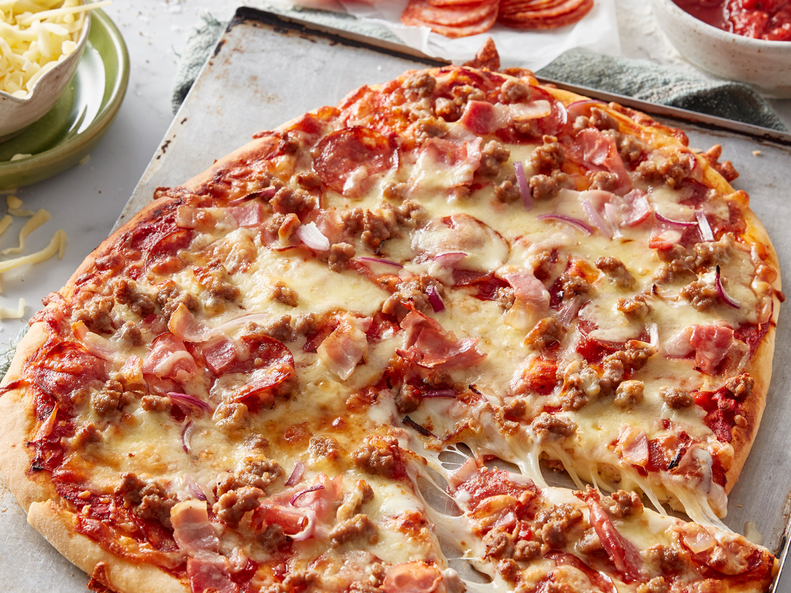

Valhalla Pizza
A masterpiece of hearty, high-quality meats including pepperoni, savory sausage, real beef, hickory-smoked bacon, and julienne-cut Canadian bacon, all topped with real cheese made from mozzarella cheese from the milk of Thor's goats Tanngrisnir and Tanngnjóstr.
Info
Prep: 1 hr 10 mins
Cook: 20 mins
Total: 1 hr 30 minutes
Servings: 3+
Yield: 3+ servings
Ingredients
- 1/2 Cup water
- 1/2 teaspoon active dry yeast
- 1/4 teaspoon granulated sugar
- 1 1/4 Cup all purpose flour
- 3/4 tsp salt
- 1 Tbsp olive oil if needed
- 1/3-1/2 Cup Pizza sauce
- 1 1/2 Cup mozzarella
- 3 Tbsp Parmesan cheese
- 3-4 slices bacon cooked and chopped
- 1/2 Cup ham roughly chopped
- 1/2 Cup hot sausage cooked and crumbled
- 1/4 Cup pepperoni slices
- Ground black pepper
Directions
- Prepare dough by combining warm water, heated to 115°F, with yeast and sugar. Stir to dissolve and allow to proof.
- In the bowl of a stand mixer, add flour and salt. With mixer running on low, slowly add yeast mixture. Increase speed, adding olive oil, if needed or desired. Mix until a ball forms, pulling away from the sides of the bowl. Transfer to a greased bowl. Cover and allow to rise in a warm location until doubled, roughly 1 hour.
- Meanwhile, cook bacon and sausage. Chop bacon and ham. Crumble sausage.
- Preheat oven to 425°F.
- Grease a baking sheet with olive oil. Shape dough to desired size. Spoon pizza sauce over dough. Sprinkle with Parmesan cheese and 1/2 cup shredded whole milk mozzarella. Add meat toppings. Finally sprinkle with remaining 1 cup mozzarella and ground black pepper.
- Bake for 15-20 minutes or until desired crispness is reached. Serve warm.